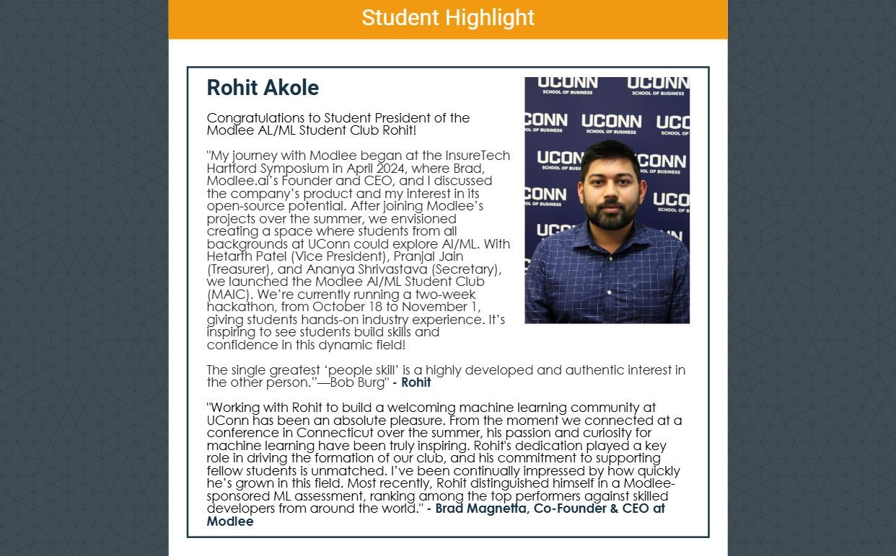
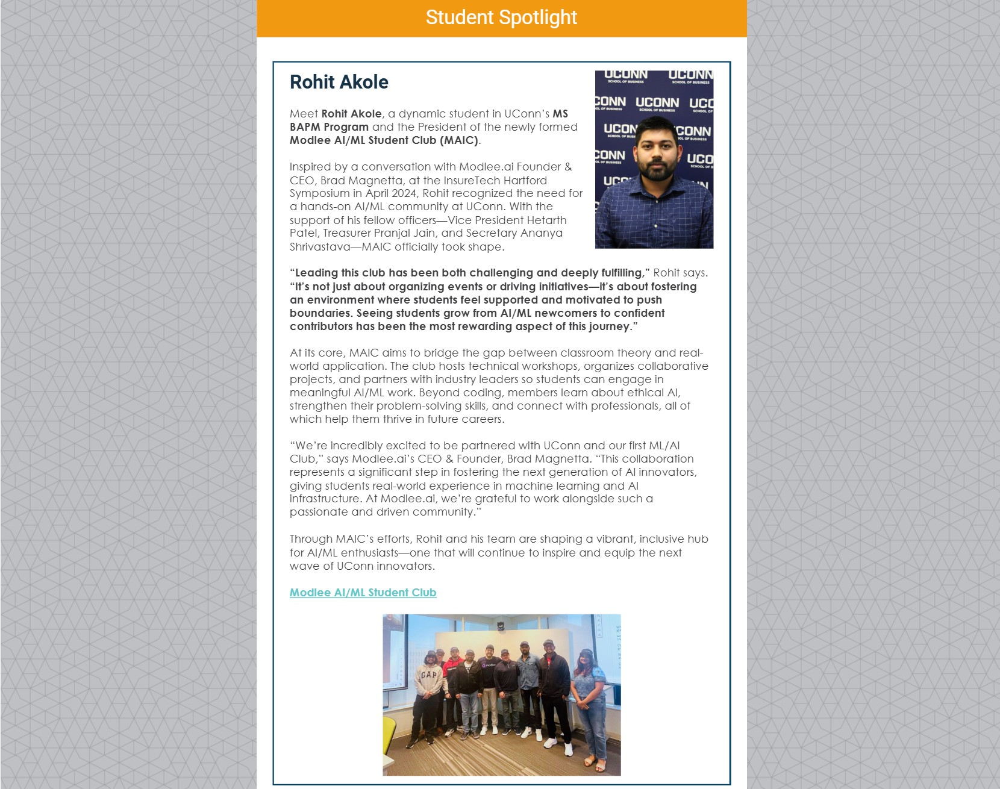
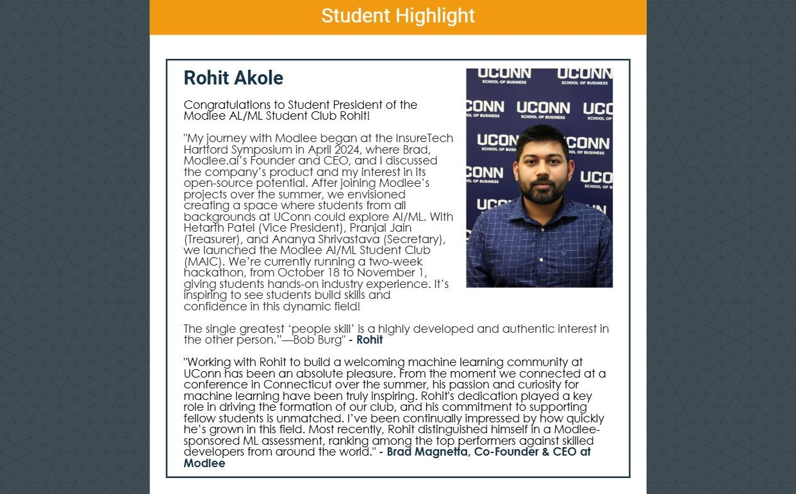
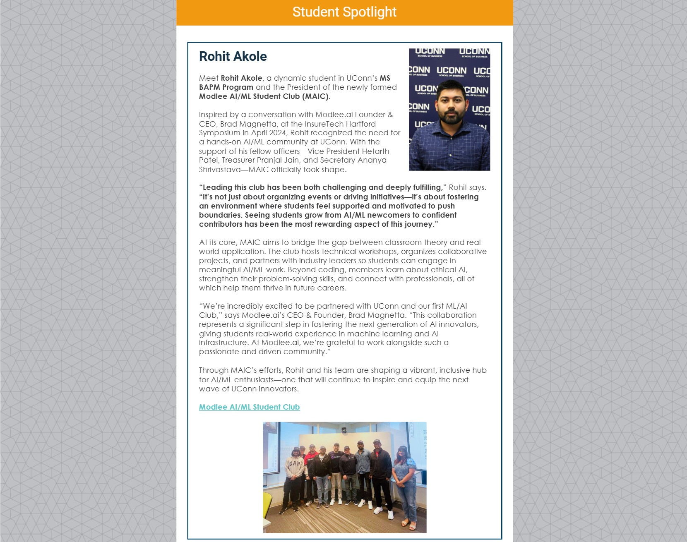

Insurance Fraud Detection Using Machine Learning
Utilizing machine learning techniques, modeling to detect fraudulent insurance claims.
#MachineLearning #FraudDetection #Python #EDA #DataAnalysis #PredictiveModeling
Hi there, and welcome to my portfolio!
I'm a data-driven problem solver who loves connecting the dots between business needs and meaningful insights. With a background in data science, machine learning, and business intelligence, I find joy in uncovering patterns and turning them into practical solutions.
Over the years, I’ve worked on projects that helped optimize sales forecasts, reduce operational costs, and improve decision-making through predictive modeling and visualization. Python has been my trusty sidekick — helping me bring AI ideas to life and explore new possibilities.
I’m always curious, always learning, and always up for a good challenge. Whether it's building better customer segmentation or diving into complex datasets, my goal is to create real, lasting impact through data.
 Python
Python SQL
SQL Django
Django CSS3
CSS3 HTML5
HTML5 Numpy
Numpy Pandas
Pandas Matplotlib
Matplotlib Plotly
Plotly Seaborn
Seaborn Scikit-learn
Scikit-learn TensorFlow
TensorFlow Pytorch
Pytorch PyCharm
PyCharm Notebook
Notebook Tableau
Tableau Github
Github Bash
Bash Docker
Docker SQL Server
SQL Server MySQL
MySQL PostgreSQL
PostgreSQL Visual Studio
Visual Studio.svg.png) Excel
Excel Jira
Jira.svg) MS Visio
MS Visio Figma
Figma
Utilizing machine learning techniques, modeling to detect fraudulent insurance claims.
#MachineLearning #FraudDetection #Python #EDA #DataAnalysis #PredictiveModeling

Modeled internet overuse risk using wearable sensor data and time-series features.
#DeepLearning # DNN #BehavioralAnalytics #NeuralNetworks #Python #SHAP #TimeSeriesAnalysis

Built an AI-powered agent to summarize emails, analyze sentiment, and generate smart replies using LLMs and the Gmail API.
#LLM #EmailAutomation #Python #AIIntegration #GmailAPI #GeminiAPI #GoogleCloud

Analysis and modeling of California housing market data to understand trends and predict prices.
#MarketAnalysis #PredictiveModeling #Python #DataVisualization #RealEstate

Analysis of tweets related to the 2020 US Presidential Election to understand public sentiment and opinion trends.
#SentimentAnalysis #NaturalLanguageProcessing #Python #SocialMediaAnalysis #DataMining #SASEnterpriseMiner

This dashboard helps in visualizing and interpreting client data, which can lead to better business decisions and strategies.
#DataVisualization #Tableau #ClientSegmentation #BusinessIntelligence #DataAnalysis

Web scraping, data wrangling, SQL, exploratory data analysis (EDA), data visualization, machine learning, and interactive dashboards with Dash.
#DataAnalysis #WebScraping #DataWrangling #SQL #ExploratoryDataAnalysis #EDA #DataVisualization #MachineLearning #Dash

Time series analysis to forecast sales, helping in inventory management and sales strategy optimization.
#TimeSeriesAnalysis #SalesForecasting #Python #PredictiveModeling #InventoryManagement

The analyses include various machine learning techniques such as Logistic Regression, Linear Regression, Ridge vs. Lasso, Decision Tree, Bagging, Boosting, Naive Bayes, Neural Networks, and Principal Component Analysis (PCA).
#PredictiveModeling #MachineLearning #DecisionTree #LogisticRegression #LinearRegression #NaiveBayes #NeuralNetworks #PrincipalComponentAnalysis

This project applies Principal Component Analysis (PCA) to the Toyota Corolla dataset and K-means clustering to a cereals dataset to identify healthy and unhealthy cereals.
#PrincipalComponentAnalysis #KmeansClustering #DataAnalysis #Python #DataMining

A robust SQL-based management system for handling all aspects of an e-commerce platform, including customers, products, orders, suppliers, and employees.
#SQL #DatabaseManagement #ECommerce #DataManagement #BusinessIntelligence
Project aimed at inspiring support for a non-profit organization, involving data collection, analysis, and strategy development to enhance community engagement.
#NonProfitCollaboration #Fundraising #CommunityOutreach #StrategicPlanning #StakeholderEngagement #ProjectManagement #ResourceMobilization
A collaborative Planning Poker assessment for estimating project tasks' effort, complexity, and uncertainty, ensuring accurate and effective project planning.
#PlanningPoker #EffortEstimation #ProjectPlanning #Collaboration #AgileMethodologies #Scrum
Ensuring targeted and effective career advancement by focusin on defining user stories and personas to guide the efforts of team members.
#UserStories #UserPersona #AgileMethodologies #TeamGuidance #ProjectPlanning #UserCenteredDesign
An upskilling and job readiness project using Agile methodologies and a JIRA board to enhance skills, create professional portfolios, and prepare resumes for career advancement.
#Roadmap #Upskilling #JobReadiness #AgileMethodologies #JIRA #ProfessionalDevelopment #CareerAdvancement
A comprehensive upskilling and job readiness program using agile methodologies combining structured learning, real-world projects, mentorship, and portfolio building.
#ProjectCharter #Upskilling #AgileMethodologies #StructuredLearning #Mentorship #PortfolioBuilding

This project demonstrates the application of project management principles through the creation of a Project Charter, Gantt chart for Course OPIM5270.
#ProjectManagement #ProjectCharter #GanttChart #ProjectPlanning #CourseProject #MSProject

Using Microsoft Excel, the analysis identifies all relevant stakeholders, assesses their interests, influence, and impact on the project, and develops strategies for effective communication and engagement.
#StakeholderAnalysis #ProjectManagement #MicrosoftExcel #StakeholderEngagement
Application of FMEA methodology to identify potential failure modes in the painting process and recommend mitigation actions.
#FMEA #RiskManagement #ProcessImprovement #FailureModeIdentification #MitigationActions #QualityControl

Use of Crystal Ball for Monte Carlo simulations to perform risk analysis and support decision-making.
#CrystalBall #RiskAnalysis #MonteCarloSimulation #DecisionMaking #PredictiveModeling #DataAnalysis

Comprehensive UI/UX design project for SimpliDocs, a user-friendly mobile app streamlining access to Indian government processes using Figma.
#UIUXDesign #Figma #MobileAppDesign #UserExperience #UserInterface #GovernmentProcesses #Accessibility

Detailed modeling and simulation of manufacturing processes using Arena software to optimize lathing operations and enhance production efficiency.
#ArenaSimulation #ManufacturingProcess #Modeling #ProductionEfficiency #ProcessOptimization
 




Thank you for visiting my portfolio! Whether you have a question, a project opportunity, or just want to say hello, I'd love to hear from you. I have expertise in data analysis, Python, SQL, and Tableau, and I'm always open to new connections and collaborations. Please reach out using the form below or connect with me on LinkedIn. Let's create something amazing together!